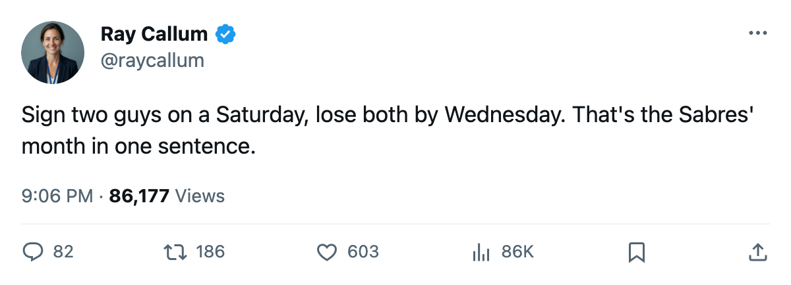
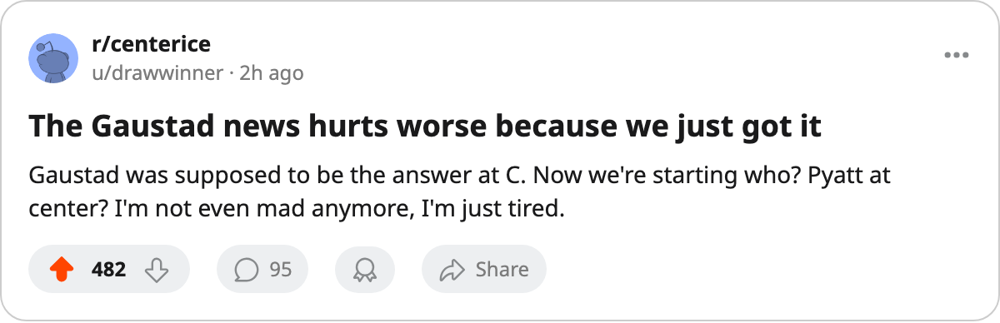

Injury Report: Buffalo lose both March 6 signings within 5 days; Gaustad's season is over
Paul Gaustad returns May 6. The regular season ends March 20.
 Ray CallumSenior correspondent · Home Ice Network
Ray CallumSenior correspondent · Home Ice Network
 Buffalo Sabres signed Milan Bartovic and Paul Gaustad72 on March 6. Within 5 days, both were on the injured list.
Buffalo Sabres signed Milan Bartovic and Paul Gaustad72 on March 6. Within 5 days, both were on the injured list.
Gaustad, a center rated 72, has a hand injury with an onset window between March 9 and March 11 and a return date of May 6. The regular season ends March 20. He will not play another game. His contract pays $508,820.
Bartovic, a right wing also rated 72, carries a groin injury with the same onset window and a return date of March 15. He appeared in a third-line right-wing slot on March 8 and was gone from the lineup the next day. His contract pays $649,320.
Paul Gaustad and Milan Bartovic74 join Jaroslav Kristek72 (foot, return March 13) on a list of 3 that has grown while the Sabres lose.
Zero wins in ten
Buffalo is 23-30-9, 67 points, 11th in the Eastern Conference, 5 points behind 8th-place  Atlanta Thrashers. In their last 10 games they have not won: 0 regulation wins, 6 regulation losses, 4 overtime losses. The current streak is 4 losses.
Atlanta Thrashers. In their last 10 games they have not won: 0 regulation wins, 6 regulation losses, 4 overtime losses. The current streak is 4 losses.
The lineup changes filed since the previous edition show a coach trying everything.  Martin Biron88 left the goaltending slot;
Martin Biron88 left the goaltending slot;  Mika Noronen82 enters.
Mika Noronen82 enters.  Brian Campbell67 and
Brian Campbell67 and  Stanislav Neckar70 were scratched.
Stanislav Neckar70 were scratched.  Alexei Zhitnik83 moved from a fourth-forward slot to the top defensive pair.
Alexei Zhitnik83 moved from a fourth-forward slot to the top defensive pair.  Brad Bombardir75 slid to the third pair.
Brad Bombardir75 slid to the third pair.  Taylor Pyatt78, Janne Laukkanen77 and Robert Olvestad68 all entered the lineup.
Taylor Pyatt78, Janne Laukkanen77 and Robert Olvestad68 all entered the lineup.
| Player | Position | Overall | Injury | Return |
|---|---|---|---|---|
| Gaustad | C | 72 | Hand | May 6 |
| Bartovic | RW | 72 | Groin | March 15 |
| Kristek | RW | 72 | Foot | March 13 |
The Sabres have logged 41 injury spells and 217 days lost this season. They host  Carolina Hurricanes on March 12. Carolina won the first meeting 6-3 in Buffalo and dropped the second 2-1 in overtime. The Hurricanes are 23-22-13, 81 points, 6th in the East, and carry 13 overtime losses, the most in the conference.
Carolina Hurricanes on March 12. Carolina won the first meeting 6-3 in Buffalo and dropped the second 2-1 in overtime. The Hurricanes are 23-22-13, 81 points, 6th in the East, and carry 13 overtime losses, the most in the conference.
Buffalo's 14 remaining games include 7 at home. Five of those 7 come in the next 10 days, and neither new signing will be available for most of that stretch.

